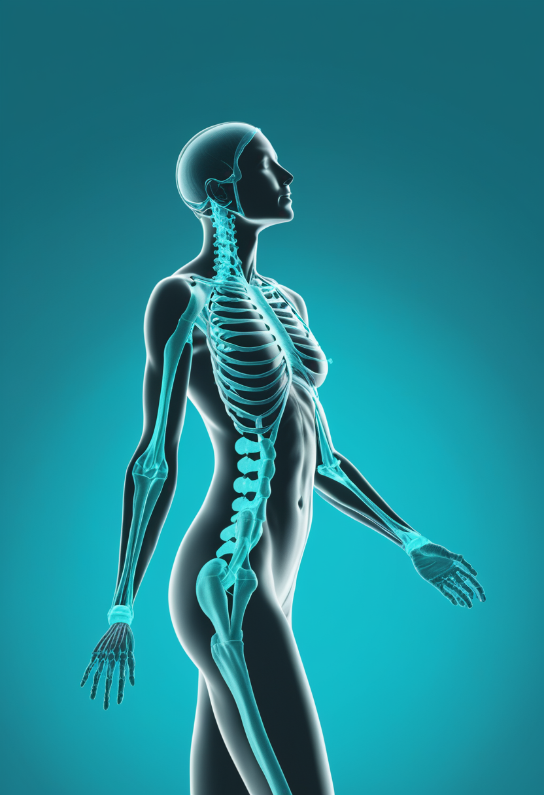
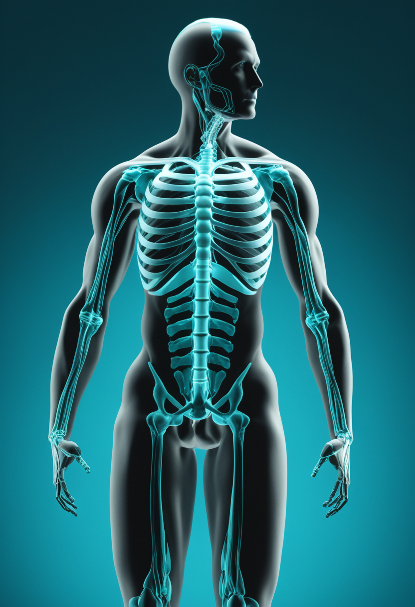
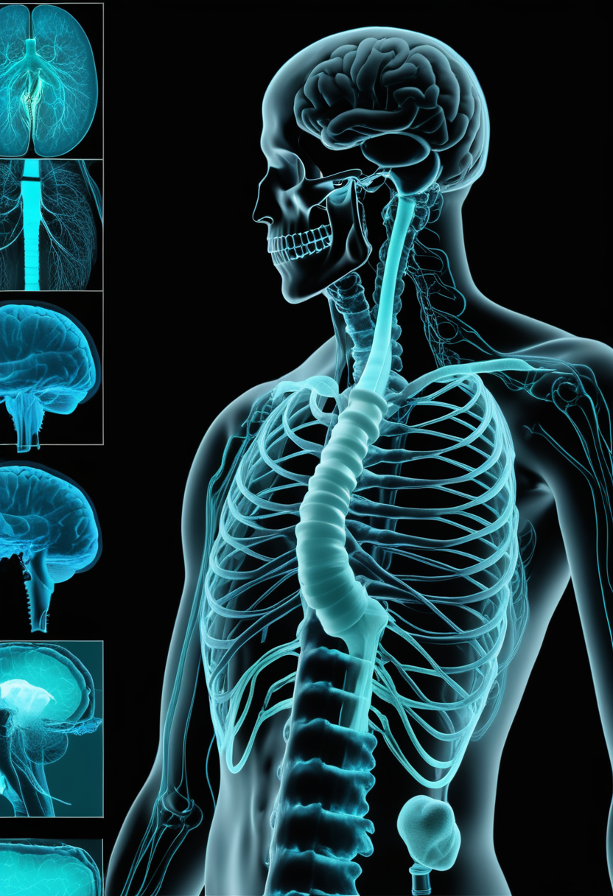
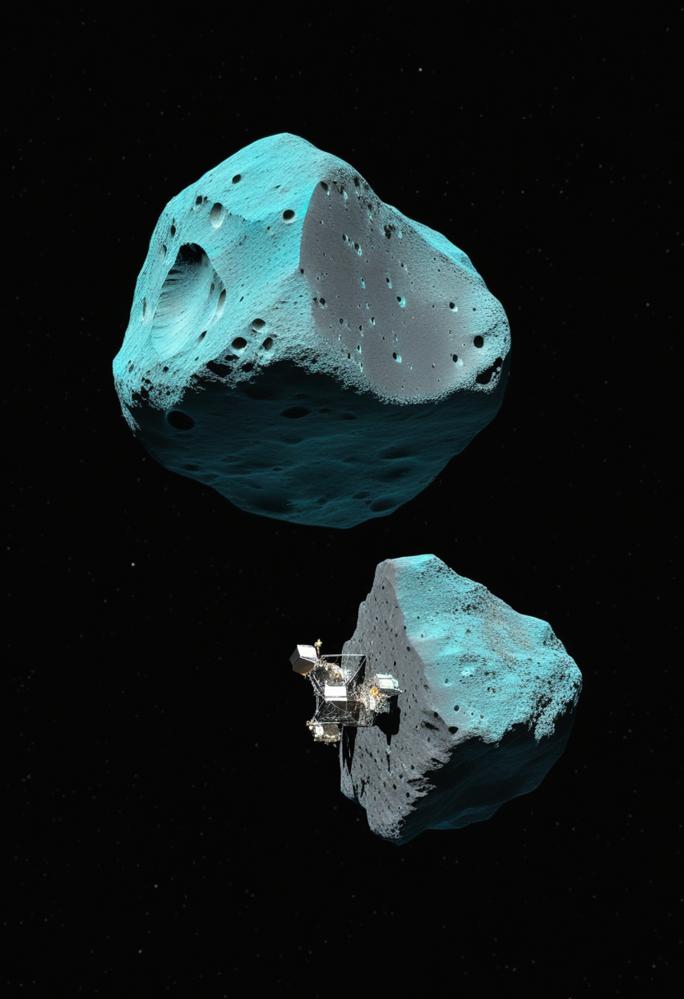
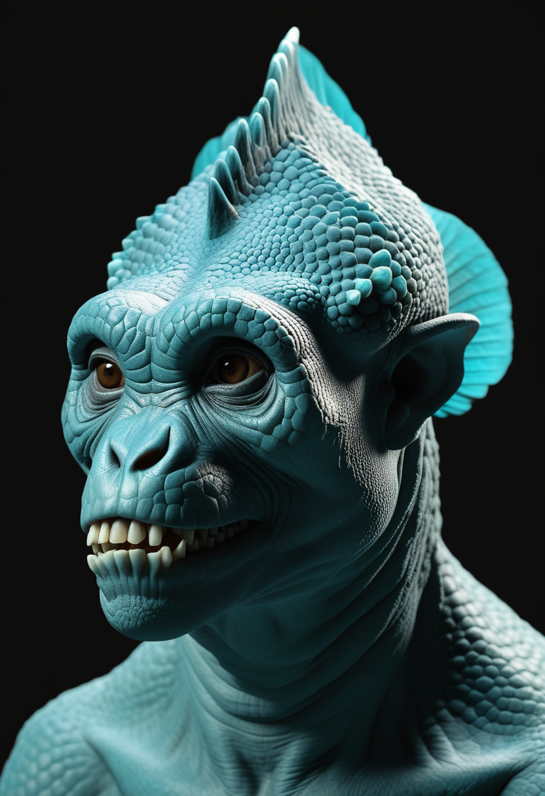

月曜日の便り。NeuralinkのBlindsightが、失明者の視覚回復を目指す構想としてFDAの画期的機器(Breakthrough Device)指定を取得した。安全性・有効性の保証ではないと注記されつつも、規制対話が優先される一歩が刻まれた。同じ日、Synchronは血管経由のBCI「Stentrode」でCOMMAND試験の有害事象ゼロという結果を土台にピボタル試験へ進む。ジュネーブでは国連の新たな政府間対話「AIガバナンスに関する国際対話」が本日開幕し、意識を持つかもしれないAIやデジタル認知の扱いが論点に上る。地上ではH5N1が豪州3州目へ広がる一方、はやぶさ2はトリフネへの超接近フライバイに成功し、天問2号はカモオアレワでのサンプル採取を開始した。過去に目を向ければ、フローレス原人が火も大型動物の狩りも持たなかったという新知見が、人類史の解像度をまた一段上げている。
視覚野への直接刺激で失明者の視覚回復を目指すNeuralinkのBlindsightが、FDAの画期的機器(Breakthrough Device)指定を得た。この指定は審査プロセスにおいて規制当局との対話が優先されることを意味するが、FDAは安全性・有効性そのものを保証するものではないと注記している。本紙7/4号で開発着手を報じたBlindsightにとって、規制面での初めての公式な前進であり、ヒトへの初回植込み時期は依然として未定のままだ。視覚という新しい応用領域に足を踏み入れたことは、運動機能回復が中心だったBCI業界の射程をさらに広げる意味を持つ。

Biogen社が開発中の次世代SMA治療薬サラネルセン(BIIB115)は、6月4日にFDAから画期的治療法(Breakthrough Therapy)指定を受けた。SMN2遺伝子のスプライシングを高効率に補正する新規化学構造を持ち、年1回投与という利便性が期待される。グローバルでは同薬の第3相試験が3本進行中で、本紙7/3号既報のSTELLAR-2試験(Zolgensma投与後の患者対象)はそのうちの1本にあたる。

Scholar Rock社の筋肉量制御薬アピテグロマブは、2025年9月の審査完了レターを受けて製造拠点(米国内の第二充填拠点追加)を見直した上で生物製剤承認申請(BLA)を再提出し、2026年5月にFDAが受理。審査結果予定日(PDUFA)は9月30日で審査が継続している。MDA2026臨床科学会議では、既存治療への上乗せで運動機能の改善を示す新データが発表され、「筋肉を取り戻す」アプローチの有効性を後押しする材料となった。
MDA2026臨床科学会議で発表された研究によると、新生児スクリーニングでSMAと診断された乳児は、症状発現後に診断された乳児より有意に早く治療を開始でき、運動発達も良好な傾向が示された。日本ではSMAが2024年4月から公費検査の対象となり、都道府県単位の実証事業が進行中で、早期診断・早期治療の体制整備が続く。
既存3剤体制に続く次世代薬2剤(サラネルセン・アピテグロマブ)がともに規制上のマイルストーンへ近づき、新生児スクリーニングの臨床的意義を裏付ける具体的エビデンスも揃いつつある。
視覚野への直接刺激で失明者の視覚回復を目指すNeuralinkのBlindsightが、FDAの画期的機器(Breakthrough Device)指定を得た。審査での規制当局との対話が優先される一方、FDAは安全性・有効性の保証ではないと注記している。ヒト初回植込みの時期は依然未定。

SynchronのStentrode(血管経由・開頭不要)は、COMMANDフィーシビリティ試験で6例全例が重篤な有害事象なく展開に成功。同社はこの結果を土台に、FDA初の植込み型BCI本承認(PMA)を目指すピボタル試験を2026年中に開始する計画。
Blindsightの画期的機器指定は視覚領域という新しい応用先を切り開き、Synchronの安全性データはピボタル試験への足場を固めた。侵襲度・適応疾患の異なる路線がそれぞれ規制の階段を一段上がった一週間。
オーストラリアの高病原性H5N1鳥インフルエンザは、7月4〜5日にニューサウスウェールズ州で新たに確認され、西オーストラリア州・南オーストラリア州に続く3州目となった(累計6例、いずれも野鳥)。家禽や人への感染は確認されておらず、当局はヒトへのリスクは低いとしつつ監視を強化している。なお、DRC・ウガンダのエボラ(累計1,481例・454死者)とウガンダのマールブルグ(1例)は、WHOの直近発表(DON-612、7月3日)から数字の変動はなく、次報を待つ状況が続いている。
フィロウイルス(エボラ・マールブルグ)の数字が動かない一方、H5N1は州境を越えて広がっている。渡り鳥の季節移動に伴うさらなる拡大への注意が必要。

JAXAの「はやぶさ2」拡張ミッションは7月5日18時30分(JST)、小惑星トリフネへ距離約1km・相対速度秒速5kmで超高速フライバイを実施し成功。18時35分に探査機自身の正常性も確認された。精密な小惑星接近技術の実証として、将来のプラネタリーディフェンス(衝突回避)技術への応用が期待されている。
中国の小惑星探査機「天問2号」は7月4日、準衛星小惑星カモオアレワの表面から約20km圏まで軌道投入し、はやぶさ2のリュウグウ探査で用いられたのと同様のタッチアンドゴー方式によるサンプル採取を開始した。採取したサンプルは2027年11月頃に地球へ帰還カプセルで届けられる計画。
CERNのBASE実験グループは、トラップした反陽子を2つの量子状態間で約1分間安定して振動させ続けることに成功し、反物質を使った量子ビット(キュービット)の実証としては初とされる。物質と反物質の振る舞いをより高精度に比較する手段として、宇宙における物質優勢の謎の解明にもつながる基礎研究。
日中の探査機が同じ週に相次いで小惑星へ接近するという珍しい巡り合わせが続く一方、CERNの反物質量子ビットは「量子×素粒子物理」の融合研究として基礎科学の裾野の広さを示した。
意識を持つとみなされる可能性のあるAIやデジタル認知の扱いも論点に含む、国連の新たな政府間対話の初回会合が本日からジュネーブで開催される。人間の認知や意識のデジタル表現をめぐる国際的な規範づくりの出発点として位置づけられている。

スミソニアン国立自然史博物館の研究チームがLiang Bua遺跡で行ったタフォノミー分析が、Science Advances誌に7月3日掲載された。数千点のステゴドン骨片のうち焼けた痕跡は1点のみで現代人由来の可能性が高く、4,200点超のネズミ遺骨にも火の痕跡はゼロだった。フローレス原人の切り傷は肋骨や指骨など食料価値の低い部位に集中しており、コモドドラゴンの歯痕(肉の多い部位に集中)とは対照的で、狩猟でなくスカベンジング(死骸漁り)を行っていた可能性を示している。
人間の認知をどう統治するかという未来の制度設計の議論と、過去の人類がどう生きていたかを塗り替える発見が、同じ「美/人類史」という章の中で共鳴している。
2026年7月6日、視覚を失った人に光を届けようとする試みが、FDAという規制の扉を一つ開けた。血管を通って脳に届くBCIは、有害事象ゼロという静かな数字を積み上げてピボタル試験へ近づいている。ジュネーブでは、AIやデジタル認知をどう扱うかを話し合う国際対話が産声を上げた。地上ではウイルスが州境を越えて広がる一方、日中の探査機はそれぞれの小惑星に触れ、CERNでは反物質が一分間だけ量子の状態を保った。そして遠い過去では、火を持たず獲物も狩らなかった小さな人類の姿が、また少し鮮明になった。前へ進む手と、過去を正しく見直す手が、今週もまた同じ朝に並んでいる。
では、また明日の朝に。 — JaH